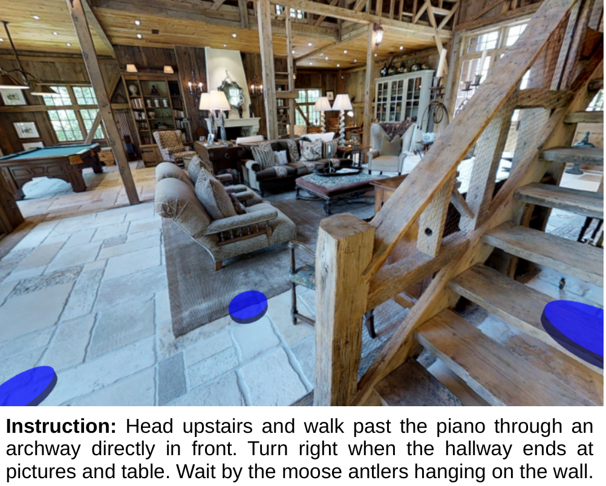
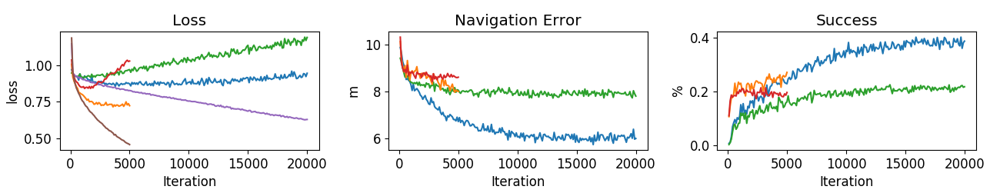

Vision-and-Language Navigation：R2R把“听懂路线”变成未见建筑中的闭环行动
Vision-and-Language Navigation：R2R把“听懂路线”变成未见建筑中的闭环行动
1. 背景与核心判断
论文：Vision-and-Language Navigation: Interpreting visually-grounded navigation instructions in real environments，CVPR 2018 Spotlight；团队来自 ANU、University of Adelaide、QUT、Macquarie University。首次提交于 2017-11-20，本笔记依据 arXiv v3（2018-04-05）的官方全文、Table 1–2 与原图。原文 HTML · PDF
读完应记住四件事：
- 贡献中心是任务、环境和评测协议。 Matterport3D Simulator 用真实建筑全景图保留视觉复杂度，R2R 用自然语言路线描述把感知、记忆、行动和停止放进同一闭环。
- 真实图像不等于真实机器人。 运动发生在预建的离散导航图上，转移确定、可达邻居由环境提供；低层避障与运动控制已被抽象掉。
- student-forcing 解决一部分状态分布错配，却没有解决换建筑的问题。 学会在见过的环境中纠错，与学习可迁移的视觉语言对应关系，是不同的证据命题。
- R2R成功指到达并停在目标附近，不要求完整遵循描述路径。 因此成功率不能直接解释为每个语言子指令都被正确执行。
2. 关键问题：导航动作会改变下一步看到什么
Golden Case，来自 Figure 1（意译）：上楼，经过钢琴，穿过正前方的拱门；走到有画和桌子的走廊尽头后右转，在墙上的驼鹿角旁等待。

来源：原文 Figure 1。蓝色圆盘标出离散导航选项；注意初始画面中能看见楼梯，却还看不到后续的钢琴与终点地标。
这条指令不能靠对初始图片做一次分类来完成：机器人先要决定上楼，新的观察才会出现；即使看到了钢琴，也要记住它是中途地标，不能在那里结束。走错一步后，之后的图像与正确路线上的训练图像都可能不同。
作者批评此前部分工作使用合成画面或直接提供物体标签：它们弱化了把自由语言对应到真实视觉外观的难度。R2R进一步要求测试建筑未在训练中出现，让“记住这间屋子怎么走”难以充当完整答案（§1–2）。这是一种更接近开放环境的测试，但依然有严格的数据与运动边界。
3. 关键方法：环境提供可走的位置，策略学习看什么指令、走哪一步
3.1 先沿案例走完一次闭环
以楼梯案例为例，下面是依据模型结构解释的执行过程，不是作者公布的这条样例的成功轨迹或 attention 测量：
- 读指令：词嵌入输入 encoder LSTM，保存每个词位置的隐状态；作者实际反转输入词序。
- 看当前位置：当前第一人称 RGB 图像经 ImageNet 预训练 ResNet-152 得到均值池化特征，与上一步动作嵌入拼接，输入 decoder LSTM。它的循环状态保存此前的动作与观测历史。
- 决定当前该处理哪段话：decoder 状态对指令隐状态做文本 attention，形成上下文，再预测动作分布。模型有条件让“上楼”和后续“经过钢琴”在不同时间影响决策，但论文没有用 attention 图或因果干预验证这种分工。
- 执行并重新观察：转向楼梯、前进到一个可达视点，获取新图像，再重复上述过程；最后模型必须主动输出
stop。
这里的 attention 是对文本，不是对图像区域。 本文使用整幅图的池化视觉特征，视觉 attention 被明确留给未来工作（§5.1）。因此不能从方法图景反推模型真的定位了钢琴或鹿角。
3.2 模拟器的动作与 baseline 的动作要分开
模拟器状态由位置、水平朝向与相机俯仰构成。每个建筑有加权无向图 $G=(V,E)$：节点是全景采集位置，边表示可行走转移，权重为两点直线距离。作者用网格射线检测障碍，删除超过 5 m 的边，再人工检查窗户、镜子等引起的错误；下一步候选还受当前水平视野约束，也允许原地转相机（§3.2）。
模拟器允许选可达节点；本文策略把它进一步简化成六个动作：left/right/up/down/forward/stop。四个转相机动作每次 30°；forward 选择最接近视野中心的可达视点。它不是以固定米数向前推进的连续机器人控制。
这种抽象保留“往哪看、往哪走”的序列决策，换来可复现且视觉逼真的环境；代价是可达性、碰撞处理和精确运动不需要策略自己学习。Matterport3D 的采样视点还往往拥有较好视野，作者也承认其位置不一定是机器人实际会处于的位置（§3.2.4）。
3.3 student-forcing：走错以后，监督答案也要重新计算
训练最关键的差异并非换网络，而是谁决定下一步真正执行的动作（§5.2）：
| 训练方式 | 环境中实际执行什么 | 用什么动作作为监督 |
|---|---|---|
| Teacher-forcing | 专家最短路动作 | 从当前状态去目标的最短路下一动作 |
| Student-forcing | 从模型动作分布采样 | 仍重新计算当前状态去目标的最短路下一动作 |
沿用案例：如果模型本应上楼却走到了沙发旁，student-forcing 会让它真的看到沙发旁的图像，再监督“从这里怎样回到通往终点的最短路线”。不能继续照搬原演示的第 $t$ 个动作，因为模型已经处在别的位置。
可将论文的逐步交叉熵监督写成：
其中 $v^*$ 是训练时已知目标，$a_t^*(s_t,v^*)$ 是从实际到达的状态 $s_t$ 去目标的专家动作；两种方法改变的是训练状态 $s_t$ 的分布。student-forcing 在模型自己造成的偏离上学习恢复；它仍是有专家标签的模仿学习，并非通过导航奖励训练的策略梯度 RL。 作者将其联系到 online DAgger 和 always-sampling 的 scheduled sampling。
这个方法成立有一个很强的便利条件：导航图允许在任意状态重新计算到已知目标的最短路。自然语言生成通常没有这样明确的“任意错误前缀后的正确答案”。测试时不向模型提供目标位置，使用 greedy decoding。
复现要点：两端 LSTM 各 512 hidden units；词/动作嵌入分别 256/32 维、随机初始化学习；视觉特征预先缓存，因此导航训练不更新 CNN。图像为 640×480、垂直视野 60°；dropout 0.5；Adam 加 weight decay，batch size 100。正文未给学习率、weight decay 数值及明确的固定训练迭代数；复现仍需查实现，不能把 Figure 7 横轴当作完整训练配置（§5.2）。
4. 数据与指标：测试的是换建筑后的到达能力
Matterport3D 提供 90 个建筑场景、10,800 个全景视点，由 194,400 张 RGB-D 图像构成；视点平均相隔 2.25 m。注意源数据含深度，本文模拟器观测与 baseline 使用 RGB，不是 RGB-D 导航策略（§3.1–3.2.1）。
R2R 采样 7,189 条最短路径，起终点主要在不同房间；路径至少 5 m、包含 4–6 条边，平均约 10 m。每条收集 3 个描述，共 21,567 条指令，平均 29 词。标注者能看带路径标记的环境和 fly-through，且被告知不必严格遵循标记路径，只需使机器人到达目标。超过 400 名美国 AMT 工作者投入约 1,600 小时（§4.2–4.3）。
| 划分 | 建筑场景 | 指令数 | 所测泛化 |
|---|---|---|---|
| Train | 61 | 14,025 | 学习语言与导航 |
| Val seen | 与 train 共用 61 个场景池 | 1,020 | 已见建筑内的验证 |
| Val unseen | 另外 11 个 | 2,349 | 未见建筑泛化 |
| Test unseen | 另外 18 个 | 4,173 | 隐藏目标位置的最终评测 |
测试提交使用了全部训练与验证数据训练；所以 test 结果不是仅使用 train 集训练的直接延续。人类测试另外只覆盖 test 中 1,390 条指令（约三分之一），比较时需保留这个样本范围差异（§5.2–5.3）。
三个指标决定如何读结果（§4.4）：
- Navigation error（NE）：最终位置到目标的图上最短路距离，不是欧氏距离，也不要求朝向正确。
- Success rate（SR）：结束时 NE 小于 3 m；约容忍一个视点的误差。
- Oracle success（OSR）：假设在该条实际轨迹距目标最近处停止时的成功率。它只改变停止时机，不会替模型规划一条更好的路线。
作者明确不评估整条轨迹，因为不少描述没有指定必须走的路径。因此“成功到达”与“按每一句话忠实走完”不能互换。
5. 关键结果：纠错训练有效，环境泛化仍是主要短板
5.1 student-forcing 的收益很不均匀
以下均来自 Table 1；SR/OSR 单位为 %，NE 为 m：
| 划分 | 方法 | NE ↓ | SR ↑ | OSR ↑ |
|---|---|---|---|---|
| Val seen | Random | 9.45 | 15.9 | 21.4 |
| Val seen | Teacher-forcing | 8.01 | 27.1 | 36.7 |
| Val seen | Student-forcing | 6.01 | 38.6 | 52.9 |
| Val unseen | Random | 9.23 | 16.3 | 22.0 |
| Val unseen | Teacher-forcing | 8.61 | 19.6 | 29.1 |
| Val unseen | Student-forcing | 7.81 | 21.8 | 28.4 |
| Test unseen | Random | 9.77 | 13.2 | 18.3 |
| Test unseen | Student-forcing | 7.85 | 20.4 | 26.6 |
| Test unseen，子集 | Human | 1.61 | 86.4 | 90.2 |
控制训练方式后，student-forcing 在 seen 的 SR 比 teacher-forcing 高 11.5 个百分点，在 unseen 只高 2.2 点；unseen 的 OSR 甚至从 29.1 降到 28.4。作者总体认为 student-forcing 更有效，但这个细节提醒我们：提升终点成功率不等于所有导航维度同时改善。论文未报告多随机种子或置信区间，尤其不应过度解读小幅差异。
Random 也不是均匀乱选六个动作：它先随机朝向，再完成 5 次成功前进，不能前进时右转。这利用了数据的路径尺度，是有意设计的可利用偏差基线。Shortest 则知道目标并沿最短路行走，SR/OSR 都为 100%，它是参照上界，不是可公平部署的竞争方法。
5.2 更多训练主要继续改善熟悉建筑

来源：原文 Figure 7。看右图蓝线与绿线：student-forcing 在 seen 上继续改善，unseen 则较早停滞；左图 unseen loss 后期上升。图中成功率坐标以 0–1 小数展示，虽轴标签带 %，数值应结合 Table 1 解读。
这支持存在明显的环境泛化问题。作者解释为视觉 grounding 可能过于依赖训练建筑；这是合理解释，不是已被识别的唯一机制。论文没有 language-only、vision-only、打乱指令或视觉特征替换等消融，无法进一步区分“记住外观”“利用场景布局先验”“语言对齐不足”各自造成多少差距。
5.3 停止确实重要，但不能独自解释失败
在 test 上，student-forcing 的 OSR 比 SR 高 6.2 点。这表明有一部分轨迹曾到达成功半径，却未正确结束；但即使赋予完美停止时机，成功仍只有表中的 OSR，绝大多数失败轨迹根本没有进入目标附近。不能把这个问题缩减成训练一个更好的 stop 分类器。
人类表现说明大部分指令可执行，但并非无噪声上界：作者观察到左右混淆，且实验不允许用手势或对话消歧。加上人类只测了子集，其结果最适合支撑“任务大体可解且模型落后很多”，而非作为精确配对的人机差异估计。
6. Insights：从 benchmark 设计中复用什么
1. 要把“偏航后能恢复”与“换环境还能识路”拆成两个实验问题。 student-forcing 在 seen 上的大收益与 unseen 上的小收益并存，说明扩大训练状态覆盖并不自动带来环境不变性。我会把训练轨迹采样方式和建筑多样性做交叉控制，分别测 seen/unseen，并加入指令打乱对照；这样才有机会判断收益来自恢复策略还是语言 grounding，而不只增加一个总成功率。
2. 动态最短路监督方便，但它对终点负责，不保证对剩余指令负责。 论文在偏航后直接用当前位置到原目标的最短路径纠正。我的推断是：某些恢复路径可能绕过“经过钢琴”这样的中途要求，而现有终点评分也不会惩罚。若研究问题是严格遵循过程约束，专家标签和评测都需要加入路径条件；只改奖励或只提高 SR 不够。
3. 这篇最有价值的取舍，是明确保留高层 grounding，抽象低层控制。 真实照片避免合成素材库把视觉问题过度简化，导航图则让任意状态的专家监督与可重复评测成为可能。但整洁、常显豪华、少人少动物的场景，以及采集时视野优良的视点，都会限制外推。采用 R2R 能验证特定条件下的视觉语言导航，不能据此宣布具备现实拥挤环境中的自主移动能力（§3.2.4）。
7. 连接与发现
- MOC-Exposure-Bias — Concept：动作改变后续视觉输入，使训练/测试状态分布错配具体可见；任意状态可查询最短路专家，使 student-forcing 成为可执行的纠错训练。